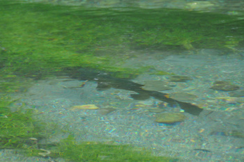
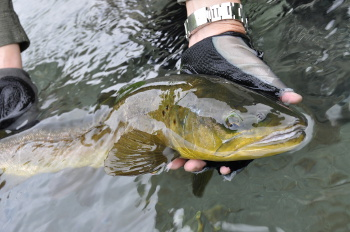

釣行日誌 ＮＺ編 「翡翠、黄金、そして銀塊」
鰐部さん粘って１尾
2010/11/25(THU)-4
１尾釣り上げて、気を良くして三人で釣り上がっていくと、川が右に曲がっている、藪のポイントへ出た。ディーン君が眼を凝らすと、どうやら１尾鱒が定位しているらしい。今度は鰐部さんの番なので、ぼくは岸辺の草むらに腰を下ろして、彼の釣りを見学した。
川の左岸側、僕から見て正面の岸辺はちょっとした崖になっており、そこにツタ状の雑草が繁茂してもじゃもじゃの藪になっている。鱒は、流れ込みの少し上あたりに陣取って、何か水中のものを捕食しているらしい。

狙いを付けた鰐部さんが、最初のフライをキャストする。しかし鱒は見向きもしない。次のフライ。無視。また次のフライ。またまた無視。そうこうするうちに、20回目のキャストになった。まだ魚は居る。しかし、何が気に入らないのか、どのフライも無視している。いよいよディーン君が、この釣行での当たりフライ、例の必殺ニンフをポケットのフライボックスから取り出して、鰐部さんのフライと取り替えた。21回目のキャスト。鱒が、フライを咥える。ストライク。鰐部さんがロッドを立てると、大きく竿が曲がる。鱒はファイトを始め、上流へと引いていく。鰐部さんは、ロッドのバットに手を当てて、鱒の引きをこらえつつ上流へと付いて歩く。一転して鱒が下流へ走る。鰐部さんはロッドを寝かせて鱒をいなす。
対岸の藪に潜られないように気をつけて、鱒の疾走をこらえつつ、鰐部さんは落ち着いて鱒の様子を覗っている。鱒の捻転がロッドを通じて鰐部さんの両手に伝わる。大きい。しかし、ブラウンと言うよりは、ブラックと言った方がいいような、黒褐色のボディをしている。朝の白銀に輝いていたシーラン・ブラウンとは、まったく違う魚のようである。幾度かの疾走をいなしていると、さすがの大物ブラウンも、疲れを見せてきたようだ。ディーン君が、僕のカメラに向かって、
「奴を捕まえてくるぜ！」
と言い放って、ネットを片手に鱒へ近づいていく。おとなしく上流へ向かって泳ぎながら休憩をしている鱒を、ディーン君のネットが尻尾から近づいて、とうとうすくい上げた。
「おめでとう！」
「ありがとう！！ 20回以上キャストして、ようやく釣れたぁ！」
鰐部さんが、安堵の表情で喜びの言葉を口にした。

まだ、産卵の疲れから快復しきっていないのか、頭が大きくて胴体の細い、年老いた感じのブラウントラウトであった。
釣行日誌ＮＺ編 目次へ
サイトマップ
ホームへ
お問い合わせ